Your browser doesn't support the features required by impress.js, so you are presented with a simplified version of this presentation.
For the best experience please use the latest Chrome , Safari or Firefox browser.
Find the shortest path.
The algorithms.
Yifu Yu(13307130355)
Graph
Graph G = {V, E}
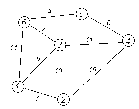
V => The set of vertices { vi }
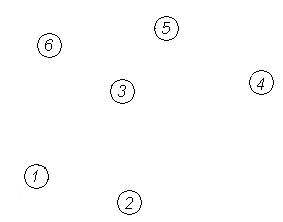
E => The set of edges { (vi, vj, wij) }
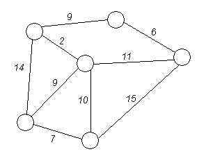
Edges may have directions.
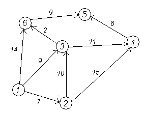
Dijkstra's algorithm:
And the man.
Who is Dijkstra?
Edsger Wybe Dijkstra (1930-2002)
A Dutch computer scientist.
Received the 1972 Turing Award.
Known for many famous algorithms.
A Dijkstra Prize was introduced in 2002.
[1]: Photoed by: Hamilton Richards - manuscripts of Edsger W. Dijkstra, University Texas at Austin. Licensed under CC BY-SA 3.0.
The algorithm.
Given a graph G = {V, E}, a start point S and a target point T.
Output the shortest distance between S and T in graph G.
And the shortest path.
Steps to achieve.
1. Set all vertices with infinite distance, except the start point S set to 0.
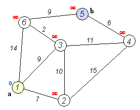
2. Find out the vertex with the smallest distance, named N. Exit if N is the target point.
3. Update the distance of vertices connected to N.
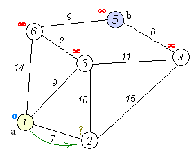
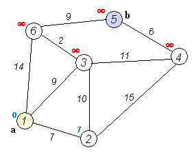
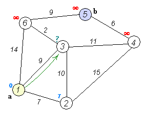
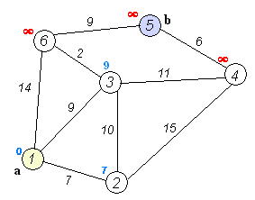
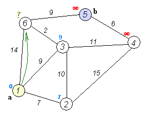
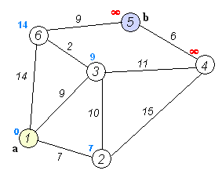
4. Mark N as out. Return to step 2.
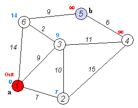
Repeat until exit.
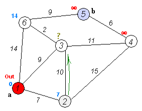
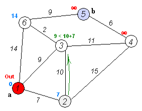
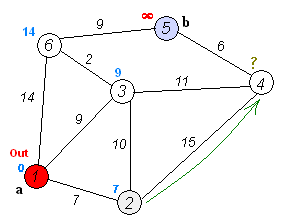
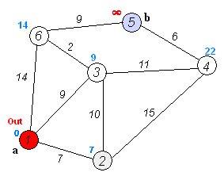
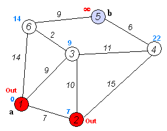
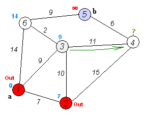
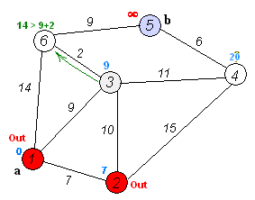
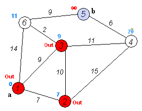
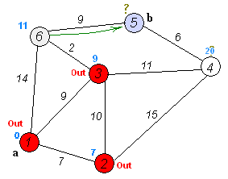
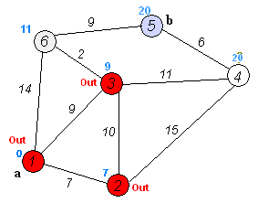
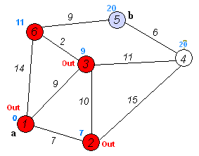
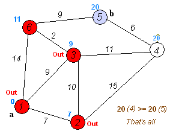
More complex situation:
graph with negative edge weights
Bellman-Ford algorithm
Named after two of its developers:
Richard Bellman, published the algorithm in 1958
Lester Ford, Jr., published the algorithm in 1956
Can handle a graph with negative edge weights.
And it can find out the existence of negative cycles
(a cycle which the sum of weights is negative)
Steps to achieve
1. Set all vertices with an infinite distance, except the start point S set to 0.
2. "Relax" edges:
for each edge (u, v, w), replace dist[v] with dist[u] + w, if later one is smaller. Repeat |V| times.
3. Negative cycle check:
for each edge(u, v, w), if dist[u] + w is smaller than dist[v], it can be proved there is a negative cycle.
Thanks for watching!
My Mailbox: 0.0@eve.moe
Made with impress.js, jQuery and my own modification :)